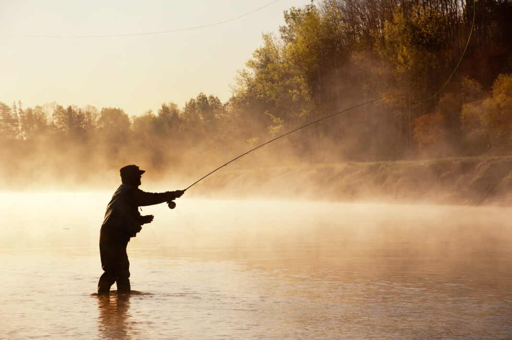

Favorite Things 1
downhillskiing
ive always had a passion for skiing. i was taught how to ski at a very
young age and have loved it ever since. skiing is a great way to get outside
and enjoy the winter weather. it is also a great way to spend time with your
family
 wikipedia
wikipedia
Favorite Things 2
cars
I blame my strong addiction to cars on the animated movie Cars. i remember
watching it as a kid and immediatley wanting to go play with my hot wheels
or RC cars. Cars are still something that consumes my free time back at
home. all my friends are into them as well so were always going to car shows
or working on them.
 wikipedia
wikipedia
Favorite Things 3
fishing
Some of my favorite memories growing up are based around fishing. whether
it was with my dad, grandpa, or papa, fishing was always a great time. i loved
going and hanging out with them because it was a great way to spend time together
and learn a life long skill. still to this day i love going fishing with my family
as well as getting my friends "hooked" on it.

wikipedia